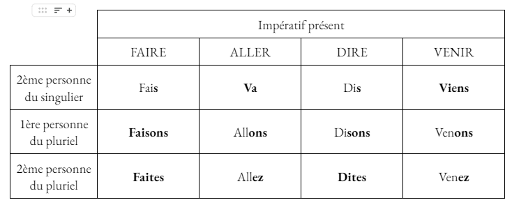
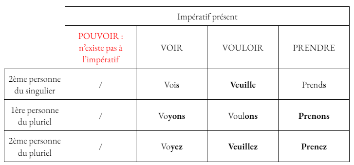
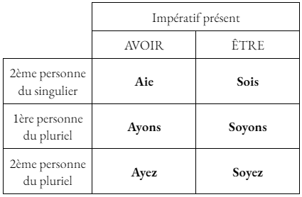

L'Impératif présent
Utilisation
L'impératif est un mode utilisé, de manière générale, pour donner un ordre, un conseil ou une interdiction.
Construction et terminaisons
Contrairement à l'indicatif, l'impératif ne comporte que trois personnes : 2ème personne du singulier, 1ère personne du pluriel et 2ème personne du plurieL.
Il ne fait pas apparaître les pronoms personnels.
Pour les verbes du 1er groupe, les terminaisons sont : -e, -ons, -ez.
Attention : la 2ème personne du singulier ne prend pas de -s à l'impératif présent pour les verbes du 1er groupe.
Les verbes du deuxième groupe conjugués à l'impératif présent prennent les mêmes terminaisons qu'à l'indicatif présent : -is, -issons, -issez
Les verbes du troisième groupe conjugués à l'impératif présent prennent les mêmes terminaisons qu'à l'indicatif présent. En revanche, on retire le -s pour ceux qui se terminent par "-as" ou "-es" à la 2ème personne du singulier à l'indicatif présent.
Exemples :
- "Range tes affaires !" : ordre
- "Prends plutôt cette couleur." : conseil
- "Ne recommence plus jamais ça !" : interdiction
Cas particulier : verbe à la forme pronominale
À la forme pronominale, on ajoute un trait d'union entre le verbe et tous les pronoms.
Exemple avec le verbe "se regarder" :
- Regarde-toi.
- Regardons-nous.
- Regardez-vous.
Conjugaison des verbes faire, aller, dire, venir, pouvoir, voir, vouloir et prendre
Voici la conjugaison des verbes faire, aller, dire, venir, pouvoir, voir, vouloir et prendre à l'impératif présent :
 
Auxiliaires
Voici la conjugaison des auxiliaires avoir et être à l'impératif présent :

Premiers exercices
Exercices à faire au maximum sans l'aide de la leçon.
Conjuguez le verbe attendu, à la personne attendue, à l'impéraif présent. Ne pas écrire le pronom, ne pas mettre de majuscule ni d'espace !
Si tu as réussi pour ces verbes, je te conseille de cliquer ici pour t'entraîner sur des verbes et des pronoms aléatoires : Exercice final de l'Impératif présent